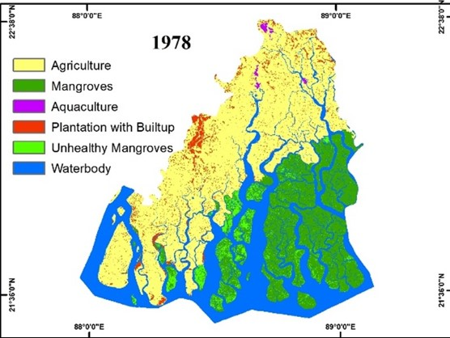
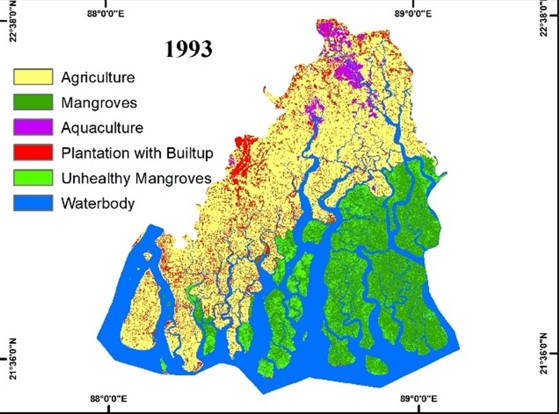
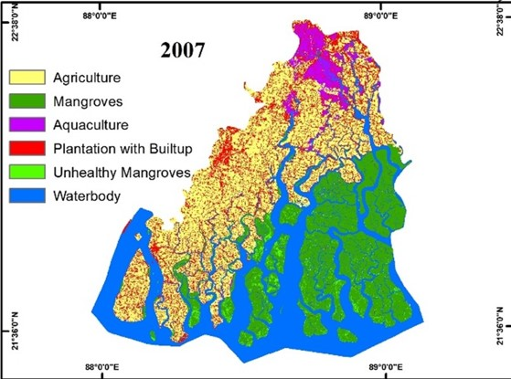
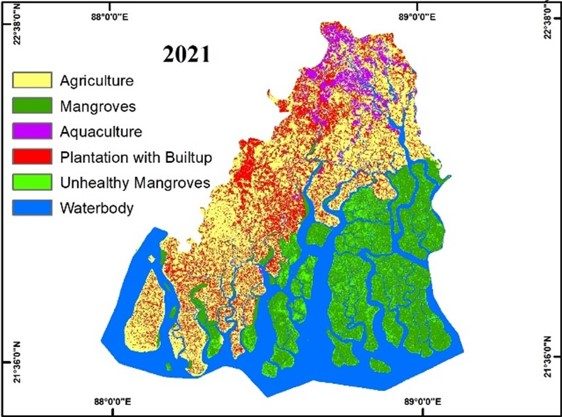

PROJECT 1 - ECOSYSTEM CHANGES OF INDIAN SUNDARBANS REGION OVER DECADES
This study uses Landsat Products to examine the spatiotemporal pattern of degradation for
the entire Indian Sundarbans mangrove forest and the environmental condition of Sundarbans
from 1978 to 2021 is also evaluated using three vegetation indices. Although there is no
single definition of 'Mangrove health', relevant indices like most Vegetation Indices are
based on spectral responses in visible, red, and near-infrared (NIR) regions of the
electromagnetic spectrum.



